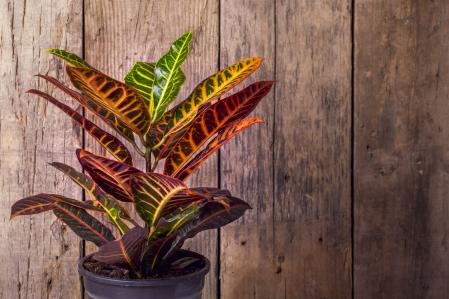

Cuidado de tus plantas: Crotón
El crotón (Codiaeum variegatum), es una planta de interior común que se cultiva por su llamativo follaje . Es originario de Asia tropical y la región del Pacífico occidental. Perteneciente a la familia de las euforbiáceas (Euphorbiaceae), este arbusto o árbol pequeño de hoja perenne presenta una amplia variedad de colores y patrones de hojas, y se han desarrollado numerosos cultivares.
Es una planta perenne delicada. El crotón se desarrolla mejor en suelos fértiles, bien drenados y húmedos. Necesita luz brillante e indirecta cuando se cultiva en interiores. Puede tolerar pleno sol si se mantiene húmedo. Los niveles de luz más altos producen un color más vibrante en las hojas y un hábito más compacto. El crotón tiene necesidades moderadas de agua y debe regarse solo cuando se seque la media pulgada a una pulgada superior del suelo. Las plantas perderán hojas si están demasiado húmedas o demasiado secas durante períodos prolongados. Como planta tropical, se desarrolla mejor con humedad moderada a alta y temperaturas cálidas.
Tres consejos de cuidados básicos:
- Riego abundante cada 3-4 días en verano y semanal en invierno. Importante un buen drenaje. La humedad ambiental tiene que ser muy elevada, por lo que se recomienda vaporizar con regularidad las hojas.
- Luz garantizada. Evitar del todo la luz directa. Aguanta poca luz pero conviene emplazarlo en una atmósfera clara. Si no, sus hojas se caerán y se pondrán pálidas.
- Temperatura ideal. Entre 16 y 21ºC. Ubica la planta en un ambiente cálido y evita contrastes.